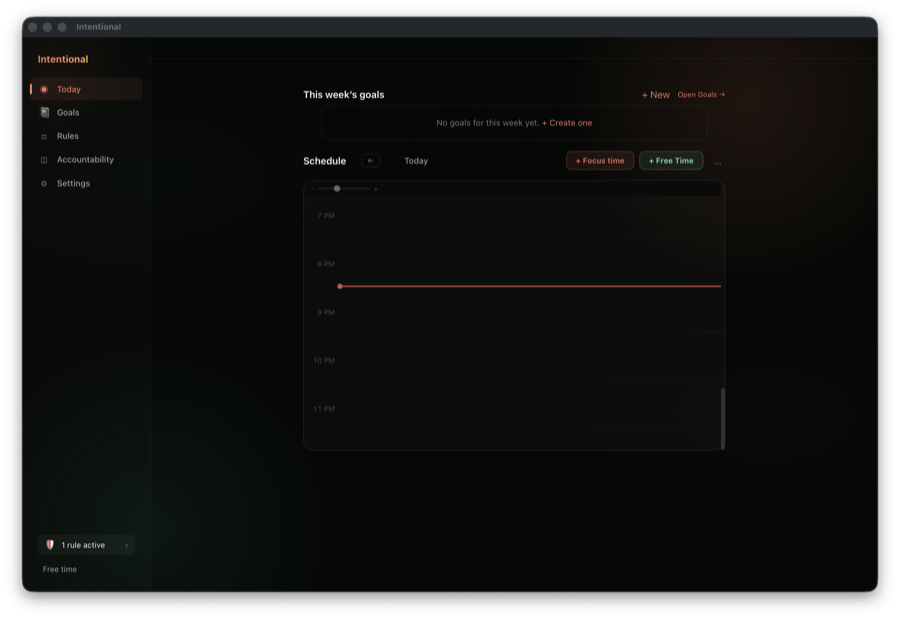
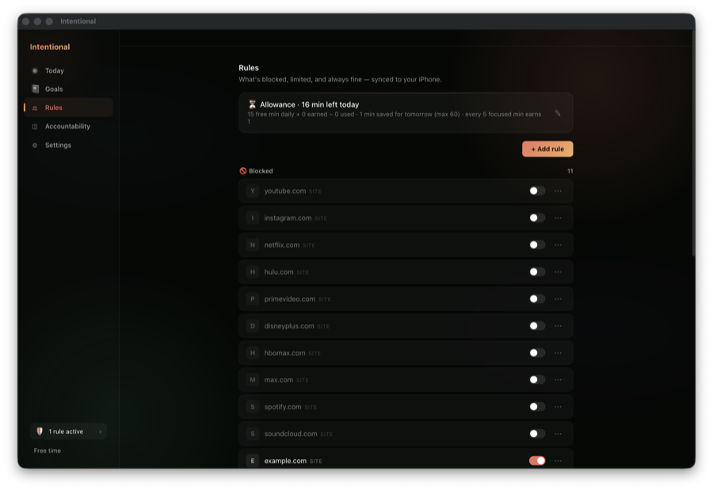
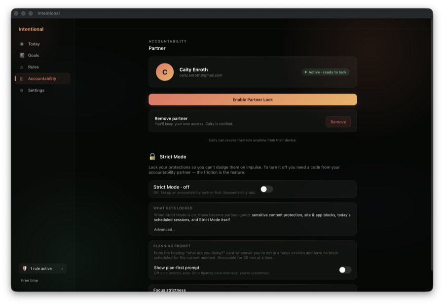
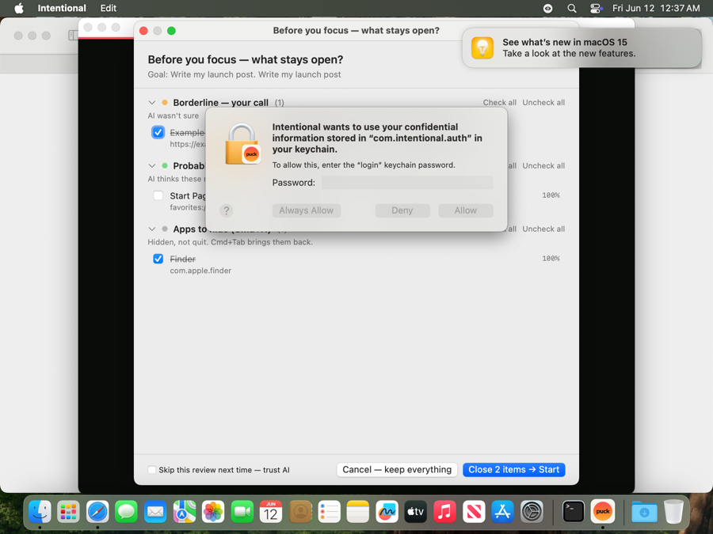

This single screen is the product's core failure. The ADHD user opens the app with exactly one question — "what should I be doing right now?" — and this screen answers nothing. Specifically:
| # | Defect | Class | Detail |
|---|---|---|---|
| A1 | No "now" card | MISSING | Nothing states the current mode (focusing? free? what session? since when?). The onboarding's screen-10 question ("Pick one thing to finish today") has no daily equivalent — it was the best screen in the product and it shows exactly once, ever. |
| A2 | State contradiction on screen | BROKEN | "Free time" label and "⏹ Stop session" visible at the same moment. One of them is lying. Trust dies here. |
| A3 | Empty timeline carries no history | MISSING | The schedule grid shows only future-planning. A full day of real usage (TimeTracker has the data!) renders as blank rows. Your May 18 ask — "track how I'm actually spending my time and present it on the timeline" — is precisely the missing organ. An evening user should see their day filled in, good and bad. |
| A4 | "No goals for this week yet" on an account with 14 goals | BROKEN | Partly the (now fixed) ISO8601 decode bug, partly weekly-goal filtering: old goals have no week assigned, so the strip is empty and scolds a power user. Empty-state copy punishes instead of helping. |
| A5 | Visual hierarchy absent | MISSING | A thin content column floats in a huge dark void; sidebar and canvas don't compose; nothing is the hero. Reads as wireframe, not product. |

example.com (a test rule seeded tonight). Footer pill: "1 rule active".
| # | Defect | Class | Detail |
|---|---|---|---|
| B1 | All real block rules disabled, no alarm | BROKEN | The user's entire blocklist (youtube, instagram, netflix, hulu…) sits toggled off — likely the R6 migration defaulted them disabled or a later regression — and the only active rule is tonight's test seed. A protection product whose protection is off should be screaming (banner, pill state, partner visibility). It whispers "1 rule active" in the footer. |
| B2 | Allowance copy contradicts onboarding | INCONSISTENT | Rules card: "every 5 focused min earns 1". Onboarding deal: "Every focused 25 earns 5". Same ratio, different vocabulary. The product's central economy is described two ways. |

| # | Defect | Class | Detail |
|---|---|---|---|
| C1 | Sweep interrupts onboarding's win moment | BROKEN | Surfaces don't know about each other. The sweep must be suppressed for the onboarding-started session (first impression: momentum, not a review modal listing Finder). |
Five of your six May 18 criticisms describe the same absent organ — the loop that makes day 2+ worth opening:
| Moment | What should happen | Your May 18 item it implements |
|---|---|---|
| Morning open | Today greets with ONE question — the daily version of onboarding screen 10: "Pick one thing to finish today" → commit → session. Guided, two taps. | commit-icon / task-commit mechanic |
| During the day | The timeline fills itself in (apps/sites already tracked; no VLM needed). Glance = "where did my morning go". | time-tracking timeline |
| Stray thought mid-session | Pill quick-capture: type it, park it, stay in session. | floating-menu to-do |
| Evening / Sunday | Review that shows the filled timeline + focus scores + goal movement, asks 2 questions, rolls goals forward. | weekly review rebuild |
| Browser context-switch | Overlay fires on tab switches only, not app switches. | tab-only context switch |
| Rank | Fix | Size | Why this order |
|---|---|---|---|
| 1 | Rebuild Today around a "Now" card — three states: idle → "Pick one thing to finish today" (daily commitment, mirrors onboarding S10); focusing → live session card (goal, elapsed, focus %, allowance earned, Stop); done-for-day → today's timeline + tomorrow seed. Kills A1/A2/A5. | L | It's the answer to "no motivation to open it". Everything else hangs off this surface. |
| 2 | Protection truth — fix the disabled-rules state (migration default or regression), make rules enabled-by-default on create, and add a loud "protection off" banner + pill state when 🚫 rules are inactive. Kills B1. | S–M | Integrity: the core promise is currently silently false on the founder's own machine. |
| 3 | State + vocabulary sweep — one source of truth for the session indicator (kill "Free time"+"Stop session" contradiction), one phrasing for the allowance everywhere ("focus 25, earn 5"). Kills A2/B2. | S | Cheap, and contradictions are what "vibe-coded" smells like. |
| 4 | Suppress sweep during onboarding session + helpful empty-states (A4's copy). Kills C1/A4. | S | First-impression seams. |
| 5 | Timeline v1 (auto-filled day) — render TimeTracker's existing per-app/site data as blocks on the Today timeline. No AI categorization in v1; names + durations. | M–L | The retention organ; data already exists, render it. |
| 6 | Pill quick-capture; weekly review rebuild; tab-only context switch | M each | The rest of the loop, post the above. |